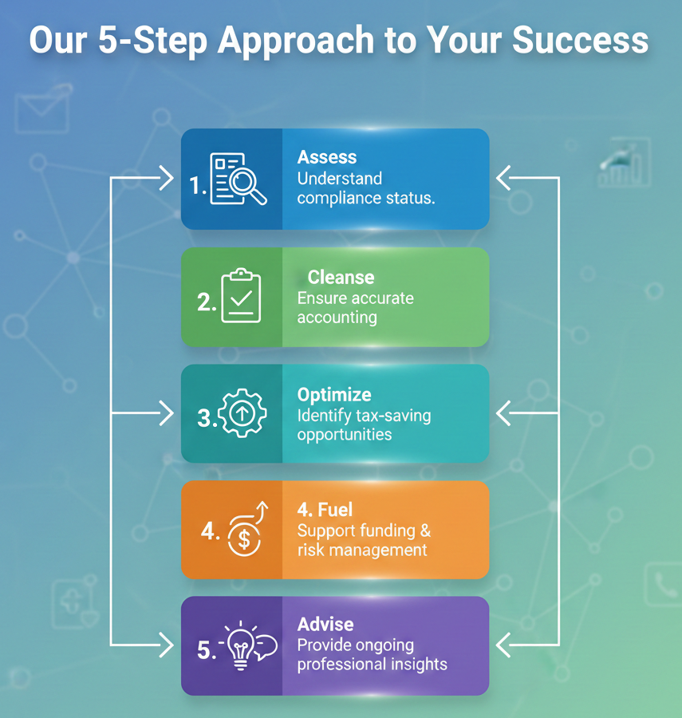

Micro, Small, and Medium Enterprises (MSMEs) are the drivers of innovation and growth. Our firm serves as a dedicated growth partner, providing cost-effective, regulation-aligned solutions that allow you to focus on your core business while we handle the complexities of finance and compliance.
A holistic 360° approach to your business health.
A. Registration & Statutory Compliance Udyam Registration: End-to-end assistance in obtaining MSME certificates. GST & Income Tax: Specialized filing for small businesses, ensuring you benefit from all applicable exemptions. Audit Services: Statutory, internal, and tax audits optimized for MSME scale. B. Funding & Financial Advisory Project Reports: Professional CMA (Credit Monitoring Analysis) data for bank loan applications. Working Capital Management: Strategies to manage cash flow and improve liquidity. Subsidies & Grants: Guiding you through government-sponsored schemes and interest subvention benefits. C. Legal & Growth Support MSME Samadhaan: Assistance in resolving delayed payment issues with buyers. Startup India: Benefits for innovative startups under the MSME umbrella. Business Structuring: Helping you decide between Proprietorship, Partnership, or LLP/Private Limited conversion.
The MSME "Benefit" Table Show potential clients why registering as an MSME matters.
| Feature | Without MSME Status | With MSME Status (via our firm) |
|---|---|---|
| Bank Interest Rates | Standard Rates | Priority Sector Lending (Lower Rates) |
| Collateral Requirements | High / Mandatory | Eligible for Credit Guarantee Schemes |
| Tender Participation | Standard Security Deposit | Exemptions & Preferences |
| Delayed Payments | No specific protection | Statutory interest on late payments |
Why Choose [Firm Name]? Deep Domain Expertise: We understand the specific tax slabs and exemptions applicable to MSMEs. Scalable Solutions: Our services grow as your business grows. Digital-First Approach: Easy document sharing and real-time updates on your compliance status.
Frequently Asked Questions (FAQ) "Is my business too small for CA services?" No business is too small. Early-stage compliance prevents heavy penalties later. "How long does Udyam registration take?" With the right documents, we typically complete it within 24–48 hours. "Can you help me get a bank loan?" Yes, we specialize in preparing the financial documentation and projections banks require for MSME loans.